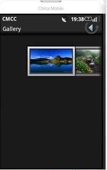
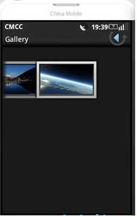

Android Gallery组件详解
Gallery组件主要用于横向显示图像列表，不过按常规做法。Gallery组件只能有限地显示指定的图像。也就是说，如果为Gallery组件指定了10张图像，那么当Gallery组件显示到第10张时，就不会再继续显示了。这虽然在大多数时候没有什么关系，但在某些情况下，我们希望图像显示到最后一张时再重第1张开始显示，也就是循环显示。要实现这种风格的Gallery组件，就需要对Gallery的Adapter对象进行一番改进。
Gallery组件的传统用法
在实现可循环显示图像的Gallery组件之前先来回顾一下Gallery组件的传统用法。Gallery组件可以横向显示一个图像列表，当单击当前图像的后一个图像时，这个图像列表会向左移动一格，当单击当前图像的前一个图像时，这个图像列表会向右移动一样。也可以通过拖动的方式来向左和向右移动图像列表。当前显示的是第1个图像的效果如图1所示。Gallery组件显示到最后一个图像的效果如图2所示。
效果图：


从图2可以看出，当显示到最后一个图像时，列表后面就没有图像的，这也是Gallery组件的基本显示效果。在本文后面的部分将详细介绍如何使Gallery组件显示到最后一个图像时会从第1个图像开始显示。
好了，现在我们来看一下图1和图2的效果是如何做出来的吧。Gallery既然用于显示图像，那第1步就必须要有一些图像文件用来显示。现在可以随意准备一些图像。在本文的例子中准备了15个jpg文件（item1.jpg至item15.jpg）。将这些文件都放在res\drawable目录中。
下面将这些图像的资源ID都保存在int数组中，代码如下：
private int[] resIds = new int[]{ R.drawable.item1, R.drawable.item2, R.drawable.item3,
R.drawable.item4, R.drawable.item5, R.drawable.item6,
R.drawable.item7, R.drawable.item8, R.drawable.item9,
R.drawable.item10, R.drawable.item11, R.drawable.item12,
R.drawable.item13, R.drawable.item14, R.drawable.item15
};
main.xml文件中配置了一个Gallery组件，代码如下：
<?xml version="1.0" encoding="utf-8"?><LinearLayout xmlns:android="http://schemas.android.com/apk/res/android
android:layout_width="fill_parent
android:layout_height="fill_parent
android:orientation="vertical" >
<Gallery
android:id="@+id/gallery
android:layout_width="fill_parent
android:layout_height="wrap_content
android:layout_marginTop="30dp" />
</LinearLayout>
现在在onCreate方法中装载这个组件，代码如下：
public void onCreate(Bundle savedInstanceState) { super.onCreate(savedInstanceState);
setContentView(R.layout.main);
// 装载Gallery组件
Gallery gallery = (Gallery) findViewById(R.id.gallery);
// 创建用于描述图像数据的ImageAdapter对象
ImageAdapter imageAdapter = new ImageAdapter(this);
// 设置Gallery组件的Adapter对象
gallery.setAdapter(imageAdapter);
}
在上面的代码中涉及到一个非常重要的类：ImageAdapter。该类是android.widget.BaseAdapter的子类，用于描述图像信息。下面先看一下这个类的完整代码。
public class ImageAdapter extends BaseAdapter { int mGalleryItemBackground;
private Context mContext;
public ImageAdapter(Context context) {
mContext = context;
// 获得Gallery组件的属性
TypedArray typedArray = obtainStyledAttributes(R.styleable.Gallery);
mGalleryItemBackground = typedArray.getResourceId(
R.styleable.Gallery_android_galleryItemBackground, 0);
}
// 返回图像总数
public int getCount() {
return resIds.length;
}
public Object getItem(int position) {
return position;
}
public long getItemId(int position) {
return position;
}
// 返回具体位置的ImageView对象
public View getView(int position, View convertView, ViewGroup parent) {
ImageView imageView = new ImageView(mContext);
// 设置当前图像的图像（position为当前图像列表的位置）
imageView.setImageResource(resIds[position]);
imageView.setScaleType(ImageView.ScaleType.FIT_XY);
imageView.setLayoutParams(new Gallery.LayoutParams(163, 106));
// 设置Gallery组件的背景风格
imageView.setBackgroundResource(mGalleryItemBackground);
return imageView;
}
}
在编写ImageAdapter类时应注意的两点：
1. 在ImageAdapter类的构造方法中获得了Gallery组件的属性信息。这些信息被定义在res\values\attrs.xml文件中，代码如下：
<?xml version="1.0" encoding="utf-8"?><resources>
<declare-styleable name="Gallery">
<attr name="android:galleryItemBackground" />
</declare-styleable>
</resources>
上面的属性信息用于设置Gallery的背景风格。
2. 在ImageAdapter类中有两个非常重要的方法：getCount和getView。其中getCount方法用于返回图像总数，要注意的是，这个总数不能大于图像的实际数（可以小于图像的实际数），否则会抛出越界异常。当Gallery组件要显示某一个图像时，就会调用getView方法，并将当前的图像索引（position参数）传入该方法。一般getView方法用于返回每一个显示图像的组件（ImageView对象）。从这一点可以看出，Gallery组件是即时显示图像的，而不是一下将所有的图像都显示出来。在getView方法中除了创建了ImageView对象，还用从resIds数组中获得了相应的图像资源ID来设置在ImageView中显示的图像。最后还设置了Gallery组件的背景显示风格。
OK，现在来运行这个程序，来回拖动图像列表，就会看到如图1和图2所示的效果了。
循环显示图像的原理
循环显示有些类似于循环链表，最后一个结点的下一个结点又是第1个结点。循环显示图像也可以模拟这一点。也许细心的读者从上一节实现的ImageAdapter类中会发现些什么。对！就是getView方法中的position参数和getCount方法的关系。position参数的值是不可能超过getCount方法返回的值的，也就是说，position参数值的范围是0至getCount() - 1。
如果这时Gallery组件正好显示到最后一个图像，position参数值正好为getCount()-1。那么我们如何再让Gallery显示下一个图像呢？也就是说让position参数值再增1，对！将getCount()方法的返回值也增1。
那么这里还有一个问题，如果position参数值无限地增加，就意味着resIds数组要不断地增大，这样会大大消耗系统的资源。想到这，就需要解决两个问题：既要position不断地增加，又让resIds数组中保存的图像资源ID是有限的，该怎么做呢？对于getCount()方法非常好解决，可以让getCount方法返回一个很大的数，例如，Integer.MAX_VALUE。这时position参数值就可以随着Gallery组件的图像不断向前移动而增大。现在resIds数组只有15个元素，如果position的值超过数组边界，要想继续循环取得数组中的元素（也就是说，当position的值是15时，取resIds数组的第0个元素，是16时取第1个元素），最简单的方法就是取余，代码如下：
resIds[position % resIds.length]
在本节对ImageAdapter类做了如下两个改进：
1.使getCount方法返回一个很大的值。建议返回Integer.MAX_VALUE。
2.在getView方法中通过取余来循环取得resIds数组中的图像资源ID。
通过上面两点改进，可以使图像列表在向右移动时会循环显示图像。当然，这种方法从本质上说只是伪循环，也就是说，如果真把图像移动到getCount方法返回的值那里，那也就显示到最后一个图像的。不过在这里getCount方法返回的是Integer.MAX_VALUE，这个值超过了20亿，除非有人真想把图像移动到第20亿的位置，否则Gallery组件看着就是一个循环显示图像的组件。
实现循环显示图像的Gallery组件
在本节将组出与循环显示图像相关的ImageAdapter类的完整代码。读者可以从中看到上一节介绍的两点改进。为了使界面看上去更丰满，本例还在单击某一个Gallery组件中的图像时在下方显示一个放大的图像（使用ImageSwitcher组件）。本例的显示效果如图3所示。当不断向后移动图像时，图像可不断显示，读者可以自己运行本例来体验一下。
在main.xml文件中定义的Gallery和ImageSwitcher组件的代码如下：
<?xml version="1.0" encoding="utf-8"?><LinearLayout xmlns:android="http://schemas.android.com/apk/res/android
android:layout_width="fill_parent
android:layout_height="fill_parent
android:orientation="vertical" >
<Gallery
android:id="@+id/gallery
android:layout_width="fill_parent
android:layout_height="wrap_content
android:layout_marginTop="30dp" />
<ImageSwitcher
android:id="@+id/imageswitcher
android:layout_width="fill_parent
android:layout_height="wrap_content
android:layout_marginTop="30dp" />
</LinearLayout>
本例中Main类的完整代码如下：
import android.app.Activity;import android.content.Context;
import android.content.res.TypedArray;
import android.os.Bundle;
import android.view.View;
import android.view.ViewGroup;
import android.view.animation.AnimationUtils;
import android.widget.AdapterView;
import android.widget.BaseAdapter;
import android.widget.Gallery;
import android.widget.ImageSwitcher;
import android.widget.ImageView;
import android.widget.AdapterView.OnItemSelectedListener;
import android.widget.Gallery.LayoutParams;
import android.widget.ViewSwitcher.ViewFactory;
public class Main extends Activity implements OnItemSelectedListener,
ViewFactory {
private Gallery gallery;
private ImageSwitcher imageSwitcher;
private ImageAdapter imageAdapter;
private int[] resIds = new int[] { R.drawable.item1, R.drawable.item2,
R.drawable.item3, R.drawable.item4, R.drawable.item5,
R.drawable.item6, R.drawable.item7, R.drawable.item8,
R.drawable.item9, R.drawable.item10, R.drawable.item11,
R.drawable.item12, R.drawable.item13, R.drawable.item14,
R.drawable.item15 };
public class ImageAdapter extends BaseAdapter {
int mGalleryItemBackground;
private Context mContext;
public ImageAdapter(Context context) {
mContext = context;
TypedArray typedArray = obtainStyledAttributes(R.styleable.Gallery);
mGalleryItemBackground = typedArray.getResourceId(
R.styleable.Gallery_android_galleryItemBackground, 0);
}
// 第1点改进，返回一个很大的值，例如，Integer.MAX_VALUE
public int getCount() {
return Integer.MAX_VALUE;
}
public Object getItem(int position) {
return position;
}
public long getItemId(int position) {
return position;
}
public View getView(int position, View convertView, ViewGroup parent) {
ImageView imageView = new ImageView(mContext);
// 第2点改进，通过取余来循环取得resIds数组中的图像资源ID
imageView.setImageResource(resIds[position % resIds.length]);
imageView.setScaleType(ImageView.ScaleType.FIT_XY);
imageView.setLayoutParams(new Gallery.LayoutParams(163, 106));
imageView.setBackgroundResource(mGalleryItemBackground);
return imageView;
}
}
@Override
public void onItemSelected(AdapterView<?> parent, View view, int position,
long id) {
// 选中Gallery中某个图像时，在ImageSwitcher组件中放大显示该图像
imageSwitcher.setImageResource(resIds[position % resIds.length]);
}
@Override
public void onNothingSelected(AdapterView<?> parent) {
}
@Override
// ImageSwitcher组件需要这个方法来创建一个View对象（一般为ImageView对象）
// 来显示图像
public View makeView() {
ImageView imageView = new ImageView(this);
imageView.setBackgroundColor(0xFF000000);
imageView.setScaleType(ImageView.ScaleType.FIT_CENTER);
imageView.setLayoutParams(new ImageSwitcher.LayoutParams(
LayoutParams.FILL_PARENT, LayoutParams.FILL_PARENT));
return imageView;
}
@Override
public void onCreate(Bundle savedInstanceState) {
super.onCreate(savedInstanceState);
setContentView(R.layout.main);
gallery = (Gallery) findViewById(R.id.gallery);
imageAdapter = new ImageAdapter(this);
gallery.setAdapter(imageAdapter);
gallery.setOnItemSelectedListener(this);
imageSwitcher = (ImageSwitcher) findViewById(R.id.imageswitcher);
// 设置ImageSwitcher组件的工厂对象
imageSwitcher.setFactory(this);
// 设置ImageSwitcher组件显示图像的动画效果
imageSwitcher.setInAnimation(AnimationUtils.loadAnimation(this,
android.R.anim.fade_in));
imageSwitcher.setOutAnimation(AnimationUtils.loadAnimation(this,
android.R.anim.fade_out));
}
}